YJ MGC 3 Beta Maglev UV
")
YJ8124 (2025)
I have both the first and second versions of the MGC, a model name with an uneven reputation. YJ has been very experimental with the features and design of each iteration, which means the reviews on each have been hit-or-miss, so when I heard from cube YouTubers that the Beta was good, I decided to see for myself. (I got the souped-up version with magnetic core, maglev, and UV coating.)
The turning feeling for the MGC Beta is the most refined out of the three. It's the smoothest and quietest, but somehow still retains the characteristic "clickity-clackity" feeling and sound that all of them have, just subdued. On the MGC v2 I described it like the foley of chattering teeth in the old cartoons. On the Beta it is the same sound, but coming from the other room!
The stickerless shades are vivid, and to my eyes, exactly like the v2. The UV coating makes the cube look quite slick but grippy.
The cube accessories include a screwdriver and alternate orange edge "torpedos" that are unmagnetized; swap them for the pre-installed green ones to "turn off" the ball core repulsion effect on the edges.
The dual adjustment system consists of a screw controlling axis distance, and a hand-turnable dial controlling the tension. There are 9 tension settings, and out of the box it comes out at level 3, which is quite relaxed. When I tightened mine to setting 6, the cube got more of the old MGC feeling and clackiness back, as well as more stable, but it didn't suffer a decrease in comfort.
I saw Max Park use this cube for his solves in the 3×3 final for Worlds 2025. He didn't make the podium there (though he was the champion for the 6×6 and 7×7). But if the Beta is good enough for Max Park, it's good enough for me.
Original post: https://www.instagram.com/p/DL3n7bXSCY2
Specifications
| Make | YJ |
|---|---|
| Model | MGC 3 Beta |
| Edition/Variant | Maglev UV |
| Model no. | YJ8124 |
| Release year | 2025 |
| Magnets (edge-corner) | 🧲 |
|---|---|
| Magnets (core) | 🧲 |
| Magnets (maglev) | 🧲 |
| Stickerless | ⭕ |
| Internals | Primary |
|---|---|
| Externals | Stickerless surfaces, UV-coated |
| Adjustment | Dual (Philips screw - axis distance; hand-operated dial - compression); included optional edge foot repulsion accessories |
| Remarks | (none) |
Photos
{kind=link}
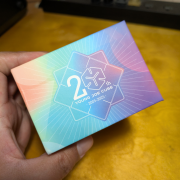
Cube box top
{kind=link}
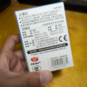
Box bottom (with model number)
{kind=link}
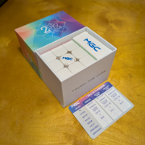
Box contents
{kind=link}
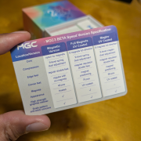
Comparison of versions
{kind=link}
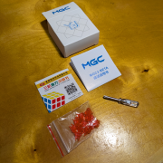
Pamphlets and adjustment tools
{kind=link}
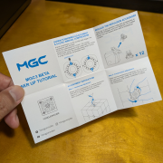
Adjustment instructions
{kind=link}
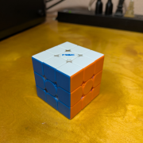
Cube (solved state)
{kind=link}
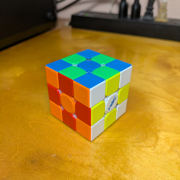
Cube (checkerboard state)
{kind=link}
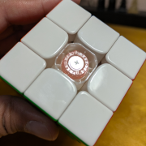
Center adjustment system
{kind=link}
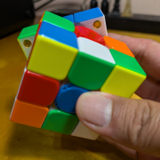
Edge magnet capsules
{kind=link}
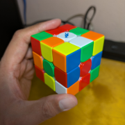
Cube (scrambled state)
{kind=link}
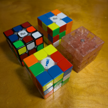
With the MGC v1 and v2 (and the Limited Edition)
Collections
This cube is part of the following collections: